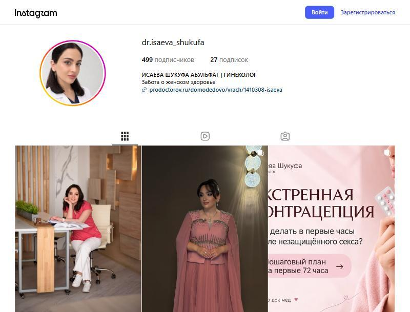

Новые пациентки
Указываем город, место приёма и способ записи. Считаем переходы, обращения в Direct и записи из Instagram, если клиника сможет их отмечать.
Продвижение блога акушера-гинеколога Шукуфы Исаевой: от знакомства с врачом до понятного пути к записи.

Уже есть главное — вы и ваша экспертизаЧетыре задачи, которые связываем в одну систему.
Указываем город, место приёма и способ записи. Считаем переходы, обращения в Direct и записи из Instagram, если клиника сможет их отмечать.
Создаём пять рубрик, банк тем на три месяца и сценарии Reels. Смотрим просмотры, сохранения, комментарии и долю видео.
Фиксируем позиционирование, роли площадок и частоту публикаций. Ежемесячно проверяем выполнение плана и цифры.
Готовим 2–3 PDF на основе ваших материалов. Считаем запросы кодовых слов и доступную связь с записью.
Количество пациенток зависит также от свободных слотов, администраторов и правил клиники. Ответственность команды — качество, регулярность и прозрачная отчётность.
Аудит открытой части блога на 22.10.2026. Охваты, география и сохранения пока неизвестны: для точных выводов нужны Insights за 90 дней.
Лайки на публикациях — наблюдение из открытого профиля, а не сравнение охватов.
По открытым данным личное получает больше реакций. Сохранения каруселей могут менять оценку их пользы — проверим их в статистике. После 11 октября новых публикаций на дату аудита не видно.
«Акушер-гинеколог в Домодедово, которая объясняет женское здоровье спокойно и по доказательной медицине. Принимает в МЕДСИ на Каширском шоссе».
Рабочая формулировка. Уточним в стратегии и согласуем использование названия МЕДСИ. Адрес приёма из материалов: Каширское шоссе, 57.
Женщины Домодедово и юга Подмосковья: плановый осмотр, цикл, контрацепция, анализы. Покажем вас, кабинет и порядок записи.
Задержка, непонятные результаты, незащищённый контакт. Нужны спокойное объяснение, алгоритм и понимание, когда нужен врач.
Восстановление и контрацепция после родов. Ваш опыт мамы двух сыновей помогает говорить об этом с пониманием.
Интимная контурная пластика — возможное направление контента после подтверждения, что вы ведёте такой приём. Обучение само по себе не означает доступность услуги.
На старте сосредоточимся на блоге и пути к записи. Дополнительные каналы подключаем по необходимости.
Уникальные Reels, карусели, сторис и закрепы. Здесь знакомим с вами, объясняем темы и предлагаем гайды.
Актуальный профиль и ссылка на запись. Бережно предлагаем довольным пациенткам оставить отзыв.
Гайды, короткие разборы и анонсы. Адаптируем материалы из Instagram; бот может стать резервным способом выдачи.
Возвращаемся к ним, если этого потребует аудитория или отдельная задача продвижения.
Возможность автоматизации проверяем с учётом аккаунта, API и ограничений доступа. Платное продвижение в стартовый объём не входит.
Выберите рубрику: внутри — задачи, темы, реальные ориентиры и планируемая частота. Объём регулярной работы уточняется при выборе формата.
Первые гайды создадим из уже готовых каруселей и Reels. Темы и кодовые слова — черновик для согласования.
Стабильную автоматизацию можно подтвердить только после технической проверки. Подключение сервиса не включено в фиксированную цену стратегии.
Это пример интерфейса. Он не подключается к Instagram и не отправляет сообщения.
Четыре клиники Домодедово и один ориентир по механикам. Данные и скриншоты из исследования на 22.10.2026; это снимок рынка на эту дату.
Приём 3 680–5 000 ₽ по сайту. ВК сети — 1,7 тыс. подписчиков. Сильный сервис и запись на первом экране; в соцсетях преобладают безличные статьи.
Для вашего блога: Покажем конкретного врача в кадре и понятный путь к приёму.
Работает 17 лет. Приём 3 700 ₽, ведение беременности от 61 600 ₽. Ссылок на соцсети на сайте не найдено.
Для вашего блога: На фоне сильной офлайн-репутации есть пространство для личного блога врача.
Приём 2 800 ₽. ВК — 284 подписчика; общие многопрофильные статьи, гинекология в свежей ленте не заметна.
Для вашего блога: Конкурировать ясностью подачи и личным доверием, а не только ценой.
Гинеколог-эндокринолог — 3 500 ₽. ВК — 74 подписчика, последние видимые посты в 2020 году.
Для вашего блога: Регулярное присутствие и локальная узнаваемость врача.
Instagram — 90,2 тыс. подписчиков. Доказательная медицина, кодовые слова, спецпроекты и закреп «Запись».
Для вашего блога: Адаптировать механику гайдов и навигацию под личный блог.
Рейтинги и цены в сравнении приведены по материалам исследования и Яндекс Медицине. Для контекста: первичный приём акушера-гинеколога в МЕДСИ — 3 300 ₽ на дату исследования.
Врачи из других городов — ориентиры по контенту и навигации. Масштаб их аудитории не является прогнозом для вашего блога.
Мифы через бытовые ситуации, карусели с позицией врача, материнство и личное. Берём живой заход в тему.
Открыть профиль ↗Закулисье работы и личная история. Берём присутствие врача, управленческие темы оставляем за рамками блога для пациенток.
Открыть профиль ↗Закреп «Запись», клинические случаи, адрес и телефон в подписях. Берём навигацию и ответы на страхи.
Открыть профиль ↗Подробные закрепы: услуги, адрес, УЗИ, отзывы. Берём структуру, избегаем случайных тем, отдаляющих блог от медицины.
Открыть профиль ↗Близкий формат: врач сетевой клиники, ПроДокторов, «Как меня найти». Берём навигацию; подписи из одних хэштегов не повторяем.
Открыть профиль ↗В изученной выборке локальных клиник заметного блога гинеколога с регулярной экспертной подачей не найдено. Проверим эту возможность на реальной географии вашей аудитории.
Сделаем Домодедово частью шапки и сервисных материалов. Локальность помогает понять, где вы принимаете.
Свяжем медицинские темы с вашей практикой и историей. Личное уже вызывает отклик.
Проверим Reels с врачом в кадре как основной формат: в изученных примерах он получает больше реакций.
Каждый PDF завершает понятная информация о записи. Кодовое слово связано с конкретной пользой.
Соберём навигацию: запись, отзывы, случаи, как найти врача и как проходит приём.
У локальных клиник сотни отзывов, у вас пока нет. Предложим довольным пациенткам поделиться опытом.
Стратегия — отдельный продукт. Для регулярной работы можно выбрать гибрид или комплексное ведение.
разово · около 2 недель
Внедрять стратегию самостоятельно.
ежемесячно · стоимость уточняется
Снимать по сценарию, писать подписи и вести сторис.
в месяц · ориентир агентства
Сниматься и согласовывать контент, примерно час в день.
Цена гибрида определяется после согласования объёма. «От 79 000 ₽» — ориентир агентства; стоимость ведения личного блога врача уточняется. Порядок оплаты стратегии в регулярных форматах согласуем в смете.
| Задача | Стратегия | Гибрид | Комплексное |
|---|---|---|---|
| Стратегия и рубрики | Команда | Команда | Команда |
| Монтаж и анализ Reels | Вы | Команда | Команда |
| Подписи и сторис | Вы | Вы | Команда |
| Съёмка врача | Вы | Вы | Вы |
| Оформление и публикация | Вы | Вы | Команда |
Структура, текст, дизайн PDF и настройка выдачи — отдельная оценка после технической проверки аккаунта.
На старте планируются 1–2 съёмки. Вы находите фотографа, команда готовит ТЗ. Оплата фотографа — отдельно.
Таргет и размещения у блогеров в стартовый объём не входят.
Разработка платформы — возможный последующий этап, отдельный от старта блога.
Тестового периода нет. Качество работ фиксируется договором и ТЗ; число пациенток не гарантируется.
Сроки предварительные: последовательность и дату старта согласуем отдельно.
Бриф, Insights, конкуренты, позиционирование, рубрики и роли площадок. Результат — стратегия и план на месяц.
От вас: статистика за 90 дней, ответы на бриф и встреча.
Шапка, 6–8 закреплённых сторис, визуальный шаблон, первые сценарии и техническая проверка выдачи. 2–3 гайда в работе.
От вас: согласование и правила упоминания МЕДСИ; профессиональный аккаунт.
Первые Reels по сценариям и первый гайд по кодовому слову.
От вас: одна съёмка на 6–10 роликов.
Сценарии, монтаж, разбор каждого видео и корректировка рубрик. Отчёт каждый месяц.
От вас: съёмка по ТЗ 1–2 раза в месяц.
По опыту агентства первые признаки интереса могут появиться примерно через месяц, измеримый рост обращений — через 2–3 месяца. Это ориентир, не обещание результата. Telegram и другие направления оцениваем по итогам первых месяцев.
По данным PikArt: 8 лет в медицинском маркетинге, 115 клиник на комплексном продвижении, 26 медицинских ниш.
Контент-план под Reels, сериальные рубрики, задания, монтаж и аналитика. Врач сама вела подписи и сторис. Несколько роликов набрали 300 000+ просмотров.
Период: март–ноябрь 2025. Рост обращений по интимной пластике — со слов врача, агентство статистику не вело.
Посмотреть кейс ↗12 тем по частым вопросам пациентов, ТЗ на самостоятельную съёмку и монтаж. По кейсу врач снял 12 роликов примерно за пару часов.
Охваты выросли в 2,5 раза.
Посмотреть кейс ↗Фирменный стиль, посты и сторис, навигация, вопросы-ответы, истории пациентов и личный контент.
В кейсе указано 135–185 обращений. Схожий контекст: врач принимает в медцентре небольшого города.
Посмотреть кейс ↗Результаты относятся к конкретным проектам и не являются прогнозом для вашего блога.